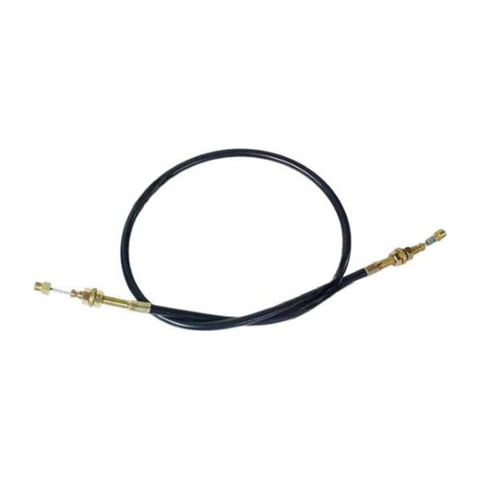

Available
Email for a quote
Nichiyu 43742-402 Cable
| OEM part number | 43742-402 |
| Fits | Nichiyu |
| Models / notes | FBT10/20PN-75S |
| Category | Brakes |
| Type | Aftermarket replacement |
Send us the quantity you need and we'll reply with pricing, usually within 24 hours. Not the exact part? We can source it. Send the part number or a photo.